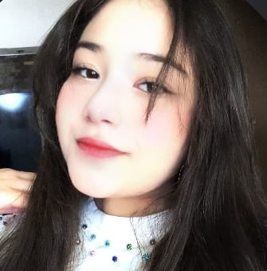
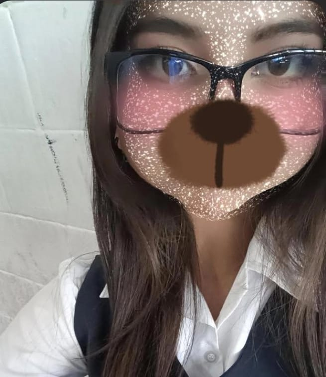
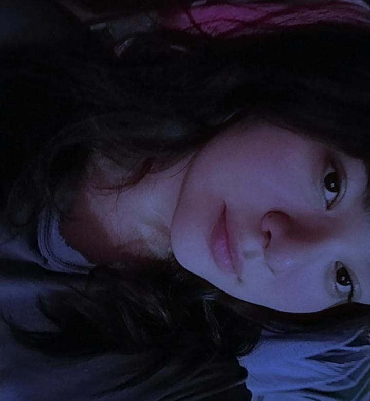
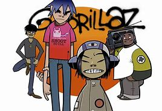
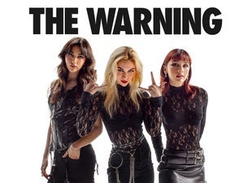

bueno yo soy Alayn tengo 16 años y como lo dije en mi nacimiento nací el 1 de febrero del 2009 y si actualmente vivo en benjamín hill y crurso la preparatoria buna ami siempre me agustado la musica y no cualquier tipo si la musica rock mas adelante te menciono mis bandas favoritas y la musica actual casi no me llama la atención y como todo ser humano también tengo mis propios sueños como tener mi propia banda y tener el cabello como kurt Cobain. me gusta tocar la guitarra aun que no sepa muy bien pero poco a poco voy aprendiendo también cuando me aburro escribo canciones y asi y me gusta colesionar los CDs de musica ahorita tengo una de gorillaz y uno de the warning y así mi obsesión con el rock empezó cundo conocí gorillaz y de ay fue y ahorita ya conozco munchas mas bandas de rock y del metal y mi deporte favorito es el básquet ball y así hoy en día me la paso escribiendo cansiones para en algún futuro llego a tener mi banda y también cundo tengo tiempo le compongo con la guitara y así bueno yo soy un poco timido casi no hablo con nadie y cundo agarro confianza ya hablo mas y me gusta pasar tiempo con amigos bueno aquí te presento a mis amigos.
Axel es mi mejor amigo de la primaria,secundaria y preparatoria el me da consejos de todo tipo y también hablamos de musica y series peliculas y somos como Scott y Wallace.
Abril también es una buena amiga y sabe cantar muy bien no entiende munchas cosas tampoco tenemos que ayudarle a comprender una que otra cosa.
Angie es también una de mis mejores amigas la conozco gracias a mi otro buen amigo David aun que viva lejos sigue siendo otra de mis mejores amigas y si también nos ponemos hablar de nose peliculas musica etc.
Estefanía también es una de mis mejores amigas es la mas inteligente hablamos de como nos va en la escuela y así aun que ya esta por graduarse y últimamente no emos hablado muncho pero he con un hola es suficiente la quiero bastante gracias a ella le entiendo un poco mejor a esto de la computadora. y aun que aun faltan mas amigos como uno que se llama Alexis Dario Emilio Dilan Nailea y asi.

Nirvana es una de mis principales bandas favoritas y de aquí me inspire en tocar la guitarra.
Gorillaz fue la primera banda que escuche y de ay ya empecé a escuchar mas rock y tengo el ultimo disco que sacaron.
The warning es mi banda favorita y también tengo el ultimo disco de ellas y el nombre de mi banda esta inspirado en ellas The last wihs.

Queen fue quien me inspiro a crear una banda.
bueno esta fue un poco de mi bibliografía no es muncho pero ire agrando mas y cundo tenga mi banda se los are saber por aquí gracias por leer.